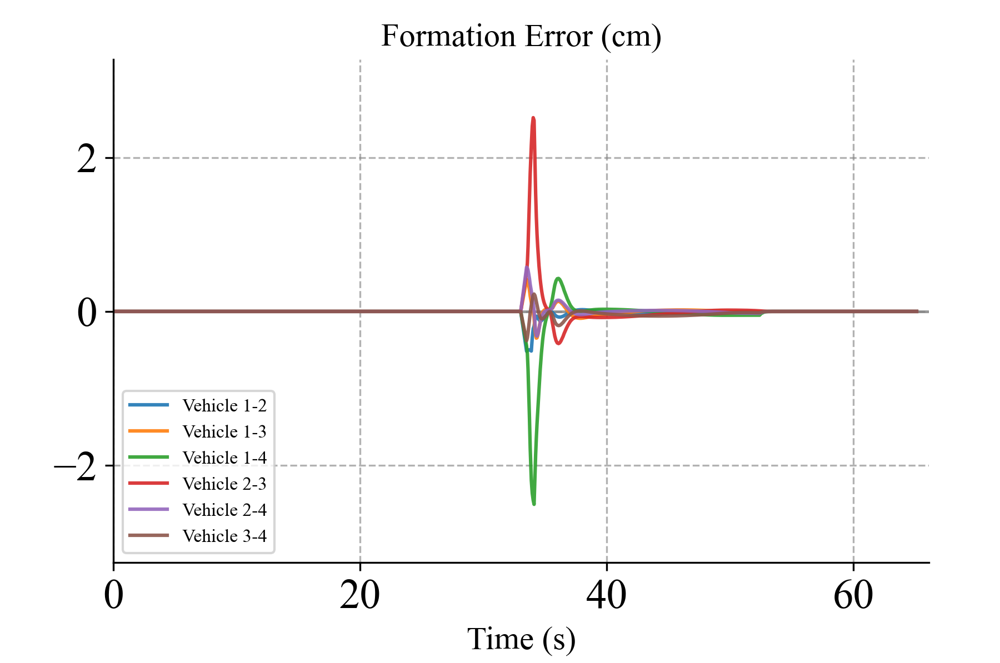
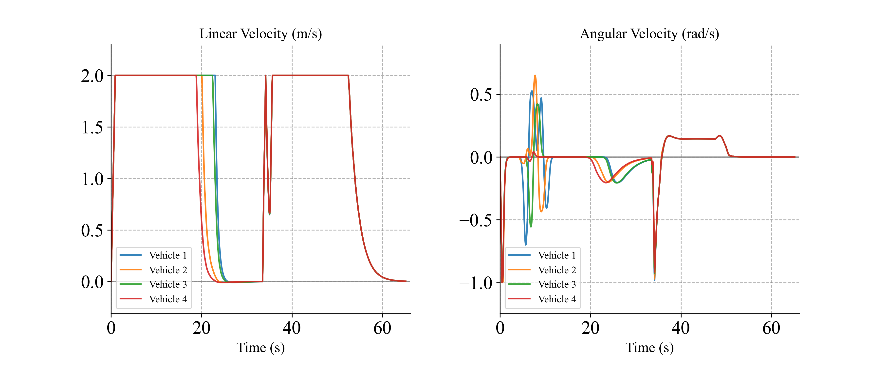
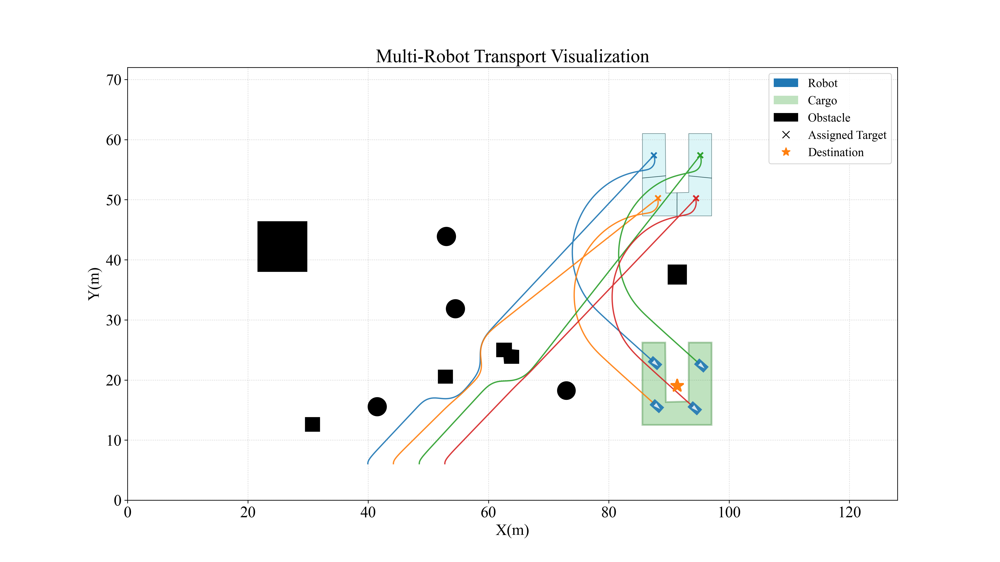

CVT / EMD / MPC
多机器人协同搬运
用 CVT 生成站位、EMD 分配机器人，再用两阶段 MPC 完成协同搬运。
- 研究问题
- 怎样把货物轮廓转化为协同搬运轨迹？
- 我的做法
- 从生成站位到分配机器人，再滚动求解控制。
- 实验效果
- 实现从站位生成、机器人分配到接近货物与协同搬运的完整流程。
站位生成与机器人分配
- CVT：在货物边界内生成参考站位。
- EMD：根据距离与近邻结构差异匹配机器人和站位。


CVT：将货物区域转化为参考站位
- 分区 Vⱼ：把货物区域 Ω 内的点分给最近站位 pⱼ，形成有界 Voronoi 单元。
- 能量 ECVT：累加区域内各点到站位的平方距离，使站位覆盖整个货物区域。
- 质心更新：取均匀密度，用单元质心更新 pⱼ；反复分区与更新，得到 CVT 站位。
EMD：兼顾移动距离与队形结构
- 移动距离：sᵢ 是机器人初始位置，pⱼ 是 CVT 站位；距离项倾向于较短的移动。
- 结构差异：δᵢS、δⱼT 分别是机器人与站位在各自点集中的最近邻距离，均排除自身。
- 组合代价 Cᵢⱼ：将距离与近邻间距差异共同纳入匹配，兼顾接近路程和局部结构。
- 指派矩阵 F：fᵢⱼ 表示机器人 i 与站位 j 的匹配权重。
- 总匹配代价：在机器人与站位数量相等时，最小化所有匹配的代价之和。
- 分配约束：非负且行、列和均为 1，构造一对一分配；实现中用 IPOPT 连续求解后取整。
两阶段滚动控制
- 接近阶段：驶向分配站位并对齐朝向。
- 搬运阶段：保持编队并向目标移动。
- 每轮执行预测控制序列的首步，再根据更新状态重算。
协同搬运仿真回放
轨迹、误差与控制输入





朝向约束配置对照

- 采用集中式 MPC，在二维运动学仿真中协调多台机器人。
- 对照不同朝向约束配置的搬运轨迹，并结合编队误差与控制输入分析阶段切换。